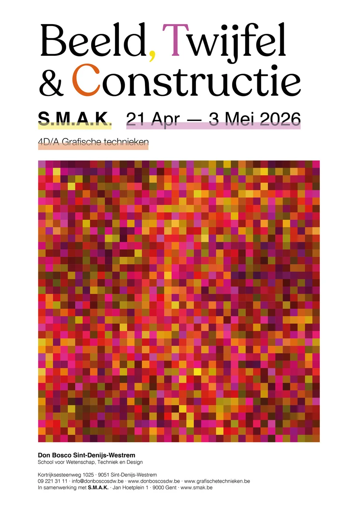
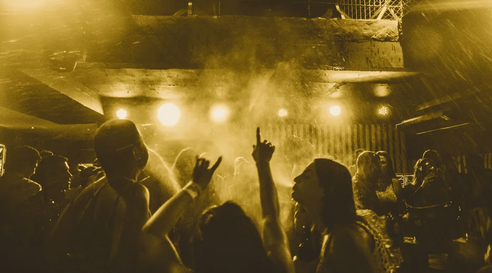
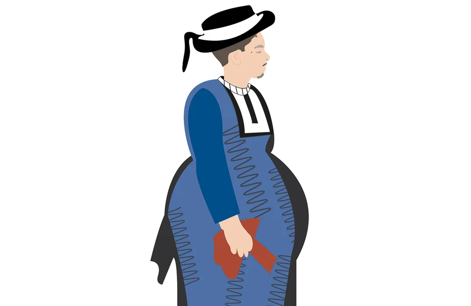
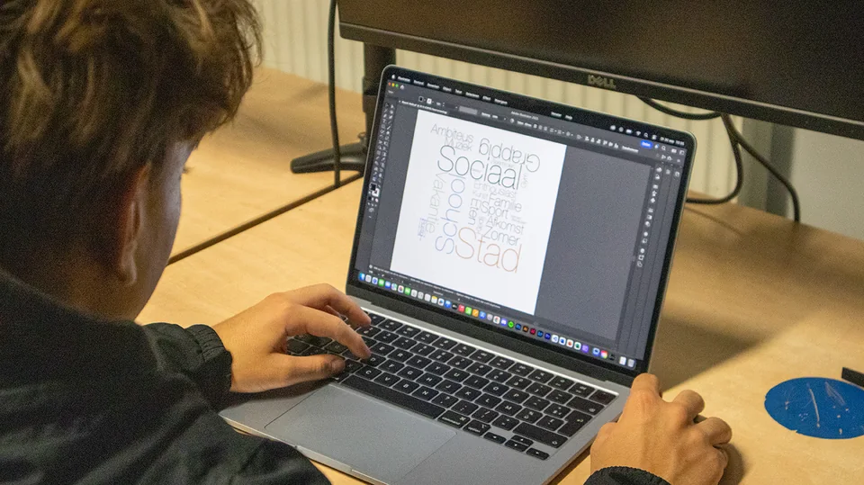

01
Beeld, Twijfel & Constructie
Campagne voor een fototentoonstelling in S.M.A.K. Gent
Campagne voor een fototentoonstelling in S.M.A.K. Gent: affiche, uitnodigingen, animaties en website.
Bekijk projectGrafisch ontwerpstudent · Gent
Ik studeer Crossmedia aan Don Bosco Sint-Denijs-Westrem. Ik maak affiches, editorial lay-outs en visuele identiteiten, en ik fotografeer en film erbij.
Beschikbaar voor een studentenjob, na school, in het weekend en in de vakanties.

01
Campagne voor een fototentoonstelling in S.M.A.K. Gent
Campagne voor een fototentoonstelling in S.M.A.K. Gent: affiche, uitnodigingen, animaties en website.
Bekijk project
02
From Memphis to Motion
Multimediaal project over de discoscene en Memphis Design: spread, sfeerfilm en websites.
Bekijk project
03
Van badkoets tot beachclub
Visuele identiteit voor de oude badcultuur van Oostende: styleguide, spread, animatie en twee websites.
Bekijk project
Ik ben Afonso Matos da Cruz, grafisch ontwerpstudent uit Gent. Ik werk graag met typografie, beeld en kleur, en ik let op details en duidelijke composities.
Mijn focus ligt nu op branding, webdesign en visuele communicatie. Fotografie en film trekken me ook aan: bewegend beeld laat je een verhaal of een gevoel overbrengen.
Inspiratie haal ik uit architectuur, technologie, fotografie, film, mode en het werk van andere creatieven. Buiten school ga ik naar de gym, reis ik graag en ontdek ik films, series, documentaires en muziek.
Ik zoek een creatieve omgeving waar ik kan bijleren en feedback kan verwerken. Mijn doel is niet alleen ervaring opdoen, maar ook meewerken aan projecten en groeien als ontwerper.
* Afhankelijk van het lessenrooster.